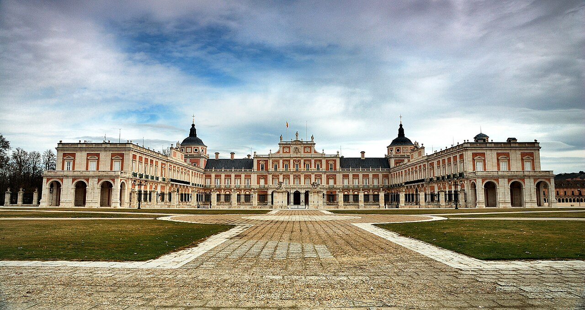
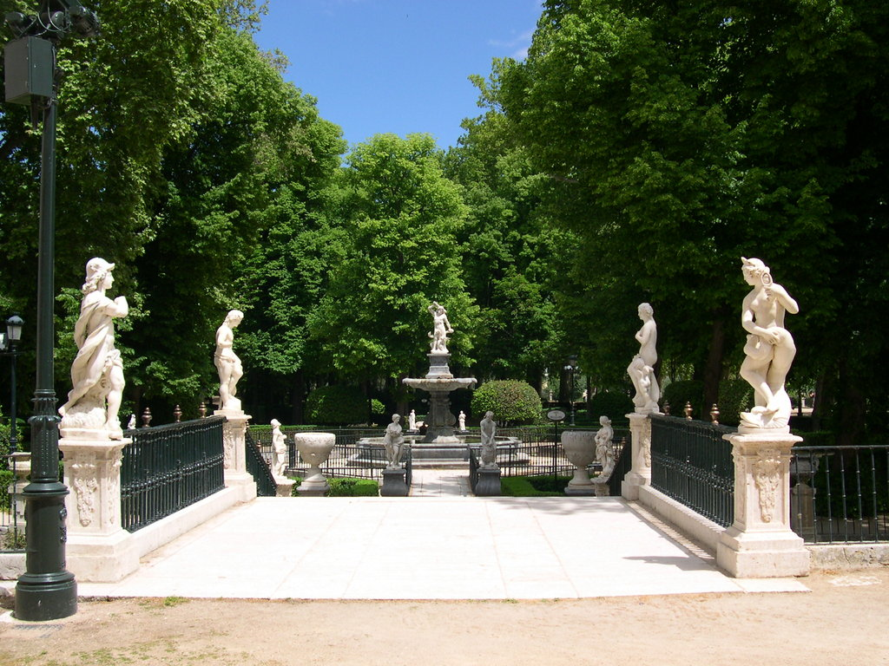
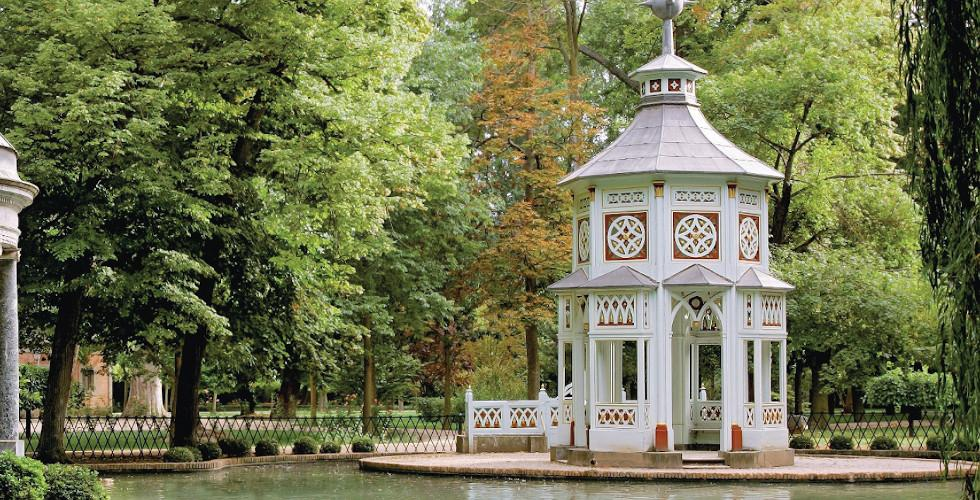
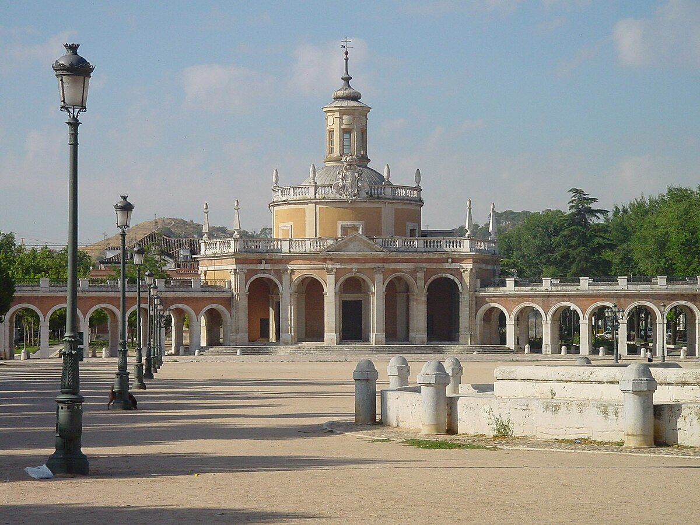
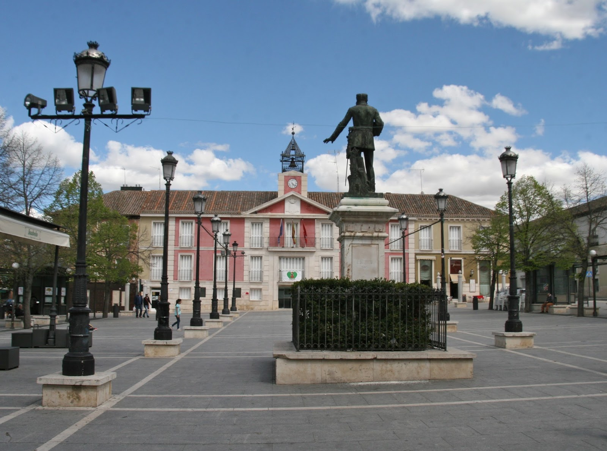
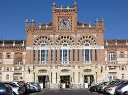

Residencia primaveral de los monarcas españoles, este imponente palacio de estilo renacentista y barroco es el emblema de la ciudad. Destacan su Salón del Trono, el Gabinete de Porcelana y su majestuosa escalera.
 CÓMO LLEGARRodeado por el río Tajo, es un oasis de tranquilidad renacentista. Famoso por sus fuentes mitológicas, estatuas y paseos arbolados que invitan a perderse en la historia.
 CÓMO LLEGAREl jardín más extenso de Aranjuez, de estilo paisajista. Alberga tesoros como el Estanque de los Chinescos, la Casa del Labrador y el Museo de Falúas Reales.
 CÓMO LLEGARSituada en la plaza de la Mariblanca, esta iglesia barroca destaca por su cúpula y su estructura circular, uniendo el palacio con el pueblo.
 CÓMO LLEGAREl corazón de la vida local, donde se encuentra el Ayuntamiento y el histórico Mercado de Abastos. Ideal para disfrutar del ambiente y la gastronomía local.
 CÓMO LLEGARUna joya del estilo neomudéjar, construida en los años 20. Su vestíbulo y fachada son un espectáculo arquitectónico que evoca otra época.
 CÓMO LLEGAR